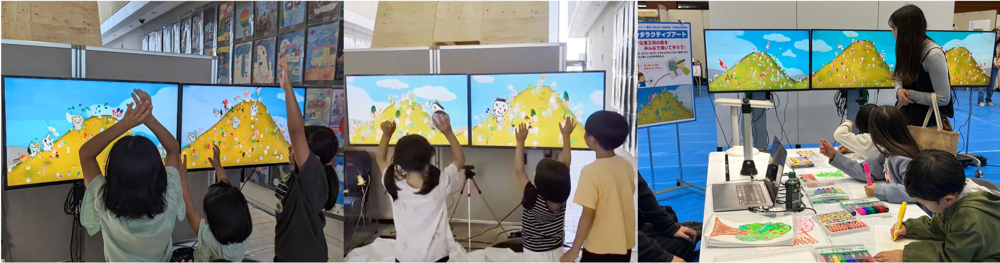
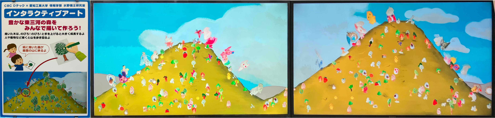
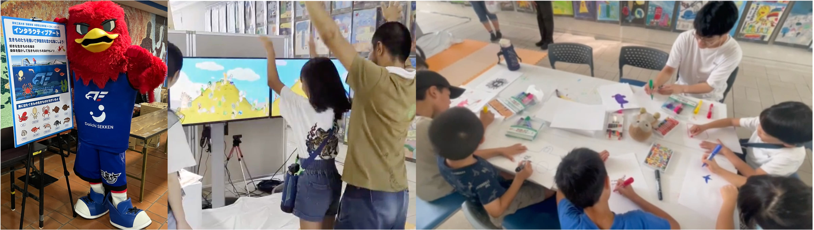

お絵描き & 身体動作 インタラクティブアート
お絵描きと身体動作を取り入れたインタラクティブコンテンツ

お絵描き、インタラクション、アート、ジェスチャ認識
使用技術
- C++ (OpenGL, OpenCV)
- Python (OpenCV, Ultralytics YOLOv8)
概要
家族連れが参加するイベント等では、子どもたちの関心を引き付けるコンテンツに注目が集まっている。そこで本研究では、お絵描きと身体動作で体験できるインタラクティブコンテンツを開発した。このコンテンツでは人や動物、植物などの手描き絵がCGとなって画面内に登場して、ジェスチャーを用いて画面内の絵に対してアクションを起こすことができる。ジェスチャ認識はカメラによる骨格検出を活用する。映像用とジェスチャ認識用のPCを個別に用いてネットワークで連動して負荷分散することでリアルタイム処理を実現している。開発コンテンツを家族向けイベントで展示を行ったところ、子どもだけでなく保護者も楽しんでいる様子が見られた。
イベントに合わせたお絵描き＆身体動作インタラクティブコンテンツを開発

お絵描き取得およびCG映像生成用PCでは、Webカメラで取得したお絵描き画像に対して輪郭検出ベースの画像処理を行い、描画内容を抽出して2DCGモデル化した。なお、描画対象の識別は手動で行い、「木」、「動物」、「魚」、「海藻」といった分類を与えた。生成したCG映像はリアルタイムに描画され、複数モニタを連携させながら同時出力を行った。また、身体動作取得用PCから受信した動作検出結果を用いて、CGモデルの動きやサイズを変化させた。
身体動作取得用PCでは、Webカメラで撮影した人物映像に対してAIによる関節点抽出を行い、バンザイ動作を検出した。検出結果はネットワーク経由でお絵描き取得＆CG映像生成用PCへ送信した。
イベントにおける運用
